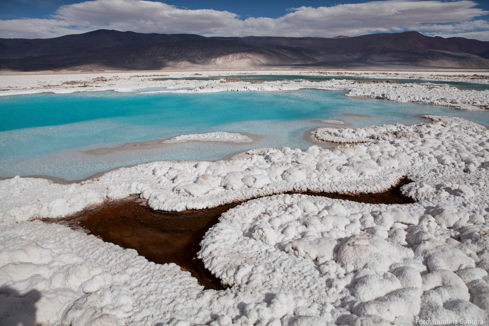
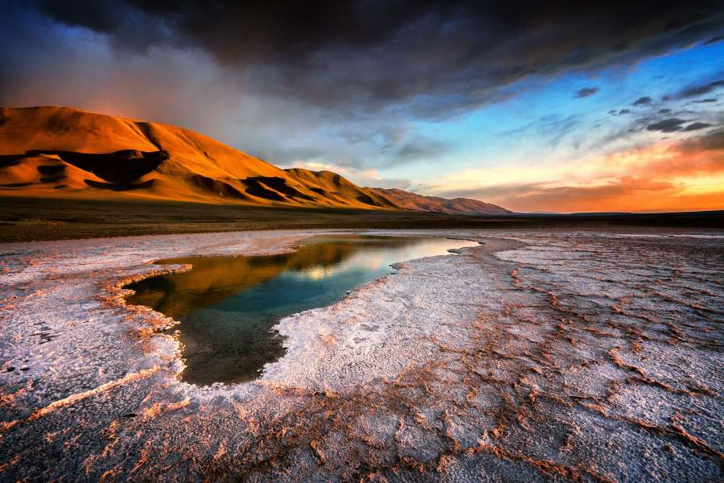

- 
- 

El encanto del norte
Esta región de Argentina la integran seis provincias ubicadas en el noroeste del territorio: Jujuy,
Salta, La Rioja, Catamarca, Santiago del Estero y Tucumán.
Es ante todo, una geografía de notables contrastes, extraordinaria belleza paisajística y riqueza
cultural. La aridez de la Puna; la exuberante selva de las Yungas; planicies santiagueñas casi a
nivel del mar, y los más de 6.800 metros de la Cordillera de los Andes. Allí donde la tierra muestra
sus capas geológicas en Talpampaya, poniendo al descubierto secreteos milenarios, y donde cada
paisaje norteño enmarca antiguas ruinas, fortalezas del período incaico, capillas coloniales,
catedrales y basílicas.
Los colores de la Quebrada, los Valles Calchaquíes, el Tren a las Nubes, los salares, las termas, el
folclore, los platos típicos y el vino Torrontés de altura, son tan sólo algunas de las diversas
opciones que vas a poder disfrutar en el noroeste argentino.
El legado de pueblos originarios y precolombinos; o sus importantes hallazgos arqueológicos y
paleontológicos son atractivos de gran interés para conocer. Los pueblos de la Quebrada de Humahuaca
y de los Valles Calchaquíes, el Camino del Inca y el Camino Real, lugares históricos, ciudadelas y
pucarás son algunas de las posibilidades para adentrarse a la cultura norteña.
Los colores de los cerros se expresan en cada pieza original, ponchos y tejidos que podés encontrar
en sus rutas de artesanos. El folklore se transmite de generación en generación, y podés escuchar
zambas y chacareras en peñas y festivales. Los carnavales, las fiestas de la Pachamama, el Inti
Raymi y los misachicos, te invitan a festejar con las comunidades locales en lo más íntimo de sus
tradiciones.